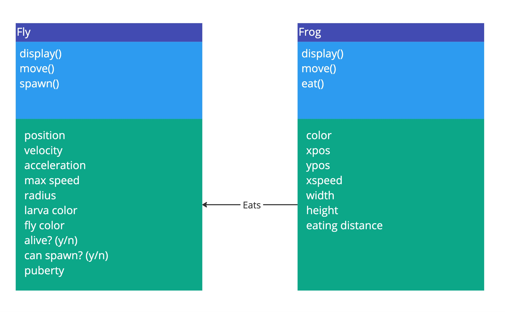

I started with Maxim's tutorial on an environment with flies and built on that by adding a frog that eats the flies it comes into contact with. The user can also control the frog's range by inputting a value in the text box at the top left of the page.
I was able to achieve this by referencing the lecture, looking at examples of how other people worked with object-oriented programming on openprocessing.org, and reading p5.js's documentation.
